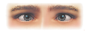
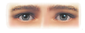

Convergence is a depth cue that involves the muscles of the eye.
Convergence is a depth cue that involves the muscles of the eye.
Because your eyes are separated by several centimeters, each eye sees a different image of the object in front of you. This is referred to as the binocular disparity.
When do the eyes see the most similar views of objects?
The eyes see the most similar views of objects when they are nearby.
The eyes see the most similar views of objects when they are far away.
When do the eyes converge (move together)?
The eyes converge to focus on objects when they are nearby.
The eyes converge to focus on objects when they are far away.